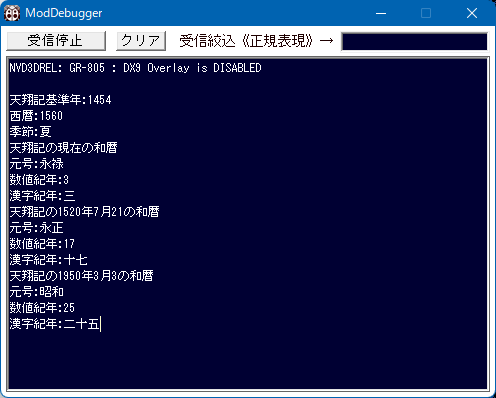

デバッグ
前提知識として、デバッグ出力 については、「ModDebuggerとデバッグ出力」にて ModDebugger も含めて解説されていますので、
そちらを参照してください。

デバッグ出力 ～ C言語 の print風 ～
printf(format, ...) と、完全に同一の記法となる。
デバッグ出力("%d,%s\n", 3, 元メッセージ.c_str())
のような記法。
デバッグ出力 ～ C++ の cout風 ～
C++のcout << ...と、完全に同一の記法となる。
cout で利用可能な記法やマニピュレータは原則全て利用可能である。即ち、
デバッグ出力 << (int)メッセージ関連情報.第１人称【武将番号】 << "," << 元メッセージ << endl
のような記法。
より詳細を知るには...
デバッグに関する主な所は以上となります。
詳しくは「デバッグ情報型.h」などを参照してください。